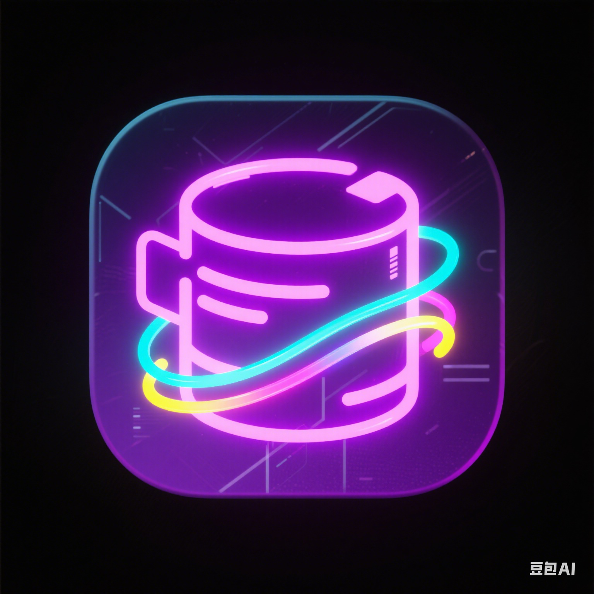
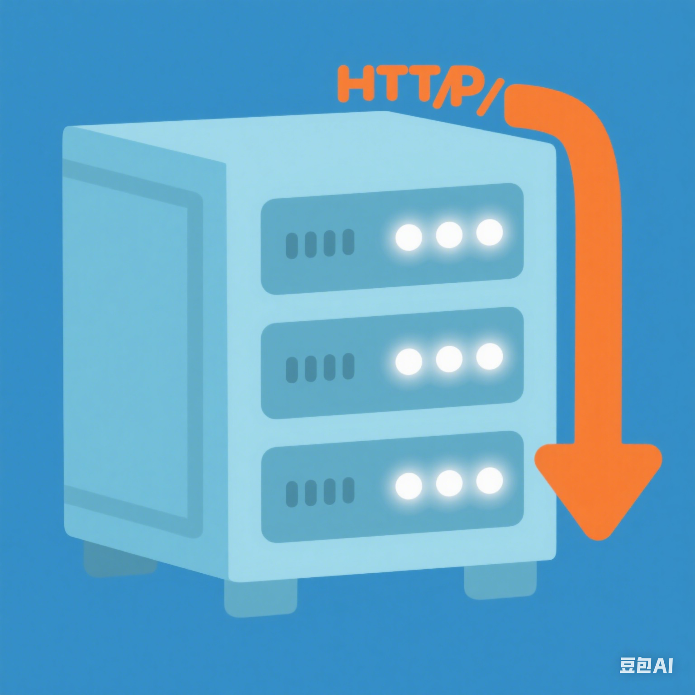

专业技能
掌握C++后端开发技术，持续学习与探索新领域
编程语言
C
80%
C++
80%
后端技术
系统编程
85%
网络编程
80%
数据库
75%
多线程编程
85%
开发工具
Git
85%
GCC
75%
GDB
70%
VS Code
90%
基础知识
数据结构与算法
85%
操作系统
80%
计算机组成与原理
75%
计算机网络
85%
项目经历
基于C++的后端项目实践，积累了丰富的开发经验

C/C++
内存管理
哈希桶
高并发内存池
模拟TCMalloc针对多线程申请内存的高效管理，实现了三层结构的内存池。
线程Cache 为了减少锁竞争带来的性能损耗，为每个线程设计成独享的(TLS)
中心Cache 给线程Cache提供内存，当线程Cache占用内存过多时会回收
页 Cache 给中心Cache提供内存，从中心Cache回收、合并前后相邻的页
2025.03 - 2025.04
查看详情

C/C++
WebSocket
CGI
基于线程池的HTTP服务器
轻量级Web服务器，实现客户端请求服务端并返回资源。
支持GET/POST方法，能够处理URL、请求头解析和请求体解析
通过环境变量和匿名管道传递HTTP请求参数
采用线程池和生产者消费者模型，处理并发任务
2025.04 - 2025.05
查看详情
教育背景
系统学习计算机专业知识，为技术生涯打下坚实基础
自动化
武汉工程大学邮电与信息工程学院
2020.10.09 - 2024.06.30 | 本科 | GPA: 3.15/4.0
学习：数据结构、计算机组成原理、操作系统、计算机网络、数据库原理、面向对象程序设计等。
2020 - 2024